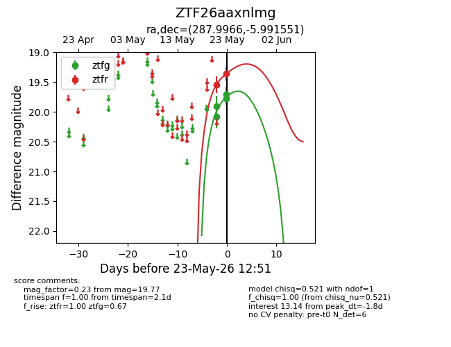
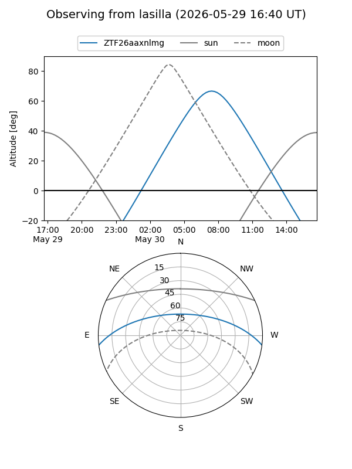
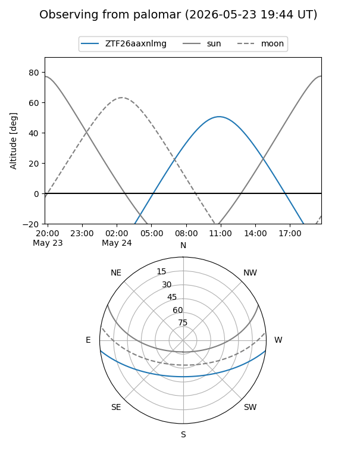
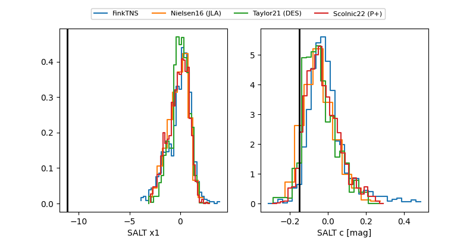

ZTF26aaxnlmg
Target ZTF26aaxnlmg at 2026-05-23 12:53
Aliases and brokers:
lsst-FINK: link
lsst-Lasair: link
lsst-ALeRCE: link
ztf-FINK: link
ztf-Lasair: link
ztf-ALeRCE: link
alt names
ZTF26aaxnlmg (ztf,fink_ztf)
Coordinates:
equatorial (ra, dec) = 287.9966,-5.99155
equatorial (HMS+DMS) = 19:11:59.19,-05:59:29.58
galactic (l, b) = (29.9100,-7.28764)
Flags:
Photometry:
last ztfg=19.77, ztfr=19.36
4 ztfg, 2 ztfr detections
Lightcurve

Visibility


Additional plots
